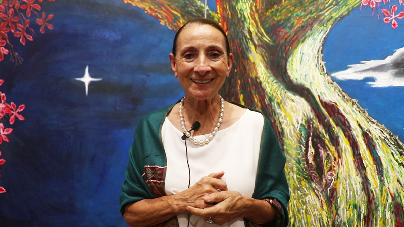
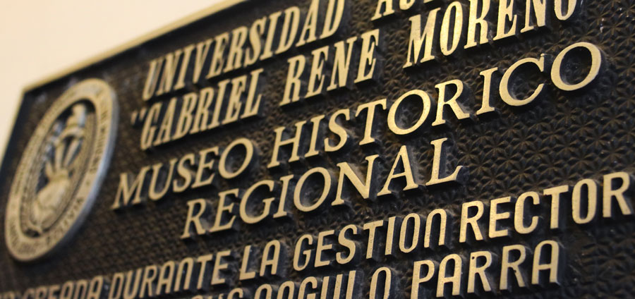

“Muchas cosas se pueden hacer con gente con voluntad”
Florencia Cadailhon,nace el 6 de marzo del 1991, estudió la Universidad del Arte en Buenos Aires y con 27 años es la actual encargada del Museo de Arte Contemporáneo (MAC), nos permitió conocer más a detalle el museo, brindándonos datos históricos que muchos desconocemos, charlamos acerca de las problemáticas que esta clase de establecimientos sobrelleva, también nos invita a visitar el museo más regularmente porque en este año se esperan muchas sorpresas.
¿Cuál es la historia del M.A.C?
FC: La casa que alberga el museo ahora fue construida alrededor de 1920 por José Cadario, durante la guerra del Chaco la casa albergaba oficiales, en sus paredes podemos apreciar los mapas que utilizaban también detalles de las aves de la región autoría del pintor Carlos Cortez. Luego la casa empieza a funcionar como escuela Neptali Sandoval para que por fin la familia Frerking dona la casa al Gobierno Municipal creándose, así como museo de arte contemporáneo en marzo de 1991 gracias a la entonces directora Cecilia Kening y el ministro de educación Mariano Baptista.
La primera exposición que se realiza es una colectiva con artistas como Callaú, Tito Kuramotto, Herminio Pedraza y Lorgio Vaca.
¿Cuál es su público más frecuente?
FC: Aunque no parezca tenemos mucho público turista, a pesar la distancia en la que nos encontramos de la plaza 24 de septiembre, todos están acostumbrados a ver los museos a su alrededor, pero la gente llega hasta acá, tenemos bastantes turistas que vienen a visitar el museo.
¿La gente de Santa Cruz apoya esta clase de lugares?
FC: No tanto como debería creo yo, de hecho, hace poco discutía con otros artistas, el público de los artistas son los mismos artistas, no es que no apoyen el MAC en particular sino el arte en general, falta el apoyo del público y de nosotros mismos. Se puede notar en las inauguraciones y exposiciones que es la misma gente que se mueve en el circuito que somos los mismos artistas, si hay apoyo, pero nos falta crecer un montón porque creo que no se valora el arte como se debería.
¿Cuáles son los requisitos que se necesitan para exponer en el MAC ?
FC: Tenemos un formulario de solicitud de espacio, los formularios se reciben a finales del año, por ejemplo, para poder exponer en el 2019 se reciben las solicitudes a fines del 2018. Mucha gente se acerca a preguntarnos, nosotros le entregamos este formulario de solicitud en el cual tienen que adjuntar curriculum y un CD con fotografías de más o menos que es lo que se va presentar. El formulario requiere información básica del artista, de la muestra como por ejemplo la técnica, número de obras síntesis explicativas de lo que se trabajar. Una vez recibidas las solicitudes con un equipo de comisiones del MAC se realiza una revisión de todas, acá en el MAC recibimos solicitudes de La Casa de la Cultura y El Altillo Beni. Aprovecho a invitar a los artistas para presentar sus solicitudes para el próximo año.
¿Qué se espera del MAC?
FC: El museo alberga en su sala de exposición permanente, contamos con obras de la colección municipal que son obras ganadoras de bienales, a partir del siglo XX hasta la actualidad.
Las salas temporales que se quedan un mes o dos meses con obras de artistas jóvenes contemporáneos locales. Desde mi visión lo que queremos en el MAC es promocionar y visibilizar dándole la importancia que merece el arte joven contemporáneo actual. Aquí no hay límite de técnicas se pueden presentar pintura, fotografías, instalaciones performance y todas las expresiones en el campo del arte.
Desde tu perspectiva ¿Cuáles son o fueron las situaciones más difíciles de los museos?
FC: Ya que mencionamos anteriormente otros espacios, el tema más difícil este año ha sido el presupuesto que tenemos para manejar el arte y la cultura en la ciudad. El tema de infraestructura creo que son los problemas más grandes con los que contamos en el MAC, es un tema general desgraciadamente con los recortes que hemos tenido ha sido un año muy difícil. A pesar de eso tenemos que mantenernos en pie, tenemos que seguir funcionando y las exposiciones se siguen realizando.
Aprovecho en mencionar que a pesar de todas las adversidades que tenemos como museos, hay cosas que es más necesaria la voluntad y las ganas de trabajar que si hay o no hay presupuesto, claro que nos ayudaría mucho, pero dentro de todo la vas remando muchas cosas se pueden hacer con gente con voluntad.
Cerramos el año con la recuperación del patio trasero. Tuvimos una jornada de murales y grafitis con chicos de Santa Cruz, Cochabamba, extranjeros de Finlandia y Perú. Los invito a visitar el nuevo espacio que estamos remodelando que ya va cobrando vida con los trabajos de los murales, es como un museo al aire libre y paseo de esculturas para salir de las salas que la gente sepa que puede venir a sentarse ahí a charlar y así convertirlo en un espacio de afluencia constante.
¿Qué pensás de Estéreotipados?
FC:Por lo poco que sé, siento que es necesario tener algo así acá. Que funcione como plataforma de museo virtual, son cosas que se vienen haciendo en otras partes del mundo. La visibilidad de los artistas jóvenes es muy necesaria e importante porque son muy talentosos y necesitan darse a conocer. Yo tuve la oportunidad de estudiar arte en Argentina y este tipo de plataformas son muy importantes, porque cuando uno vuelve no sabe lo que está pasando, también es muy esencial para el público en general conozca a los artistas y también para que se arme una red entre ellos mismos.
Aprovecho en mencionar que a pesar de todas las adversidades que tenemos como museos, hay cosas que es más necesaria la voluntad y las ganas de trabajar que si hay o no hay presupuesto, claro que nos ayudaría mucho, pero dentro de todo la vas remando muchas cosas se pueden hacer con gente con voluntad.
SHARE:
Categorías
MÚSICA 0
TEATRO 1
Publicaciones Recientes
-
 Publicado : 07/05/2019
Publicado : 07/05/2019
-
Publicado : 10/01/2019
-
 Publicado : 03/01/2019
Publicado : 03/01/2019
-
 Publicado : 27/12/2018
Publicado : 27/12/2018
-  Publicado : 19/11/2018
-
 Publicado : 18/11/2018
Publicado : 18/11/2018
-  Publicado : 12/11/2018
-

Museo el Altillo Beni abrió sus puertas al público este 5 de noviembre
Publicado : 9/11/2018
Tags
ENTREVISTAS MUSEOS LITERATURA CCFR LITERATURA TITO KURAMOTTO TEATRO DE LOS ANDES MUSEO DE ARTE CONTEMPORÁNEO CALENDARIECITO